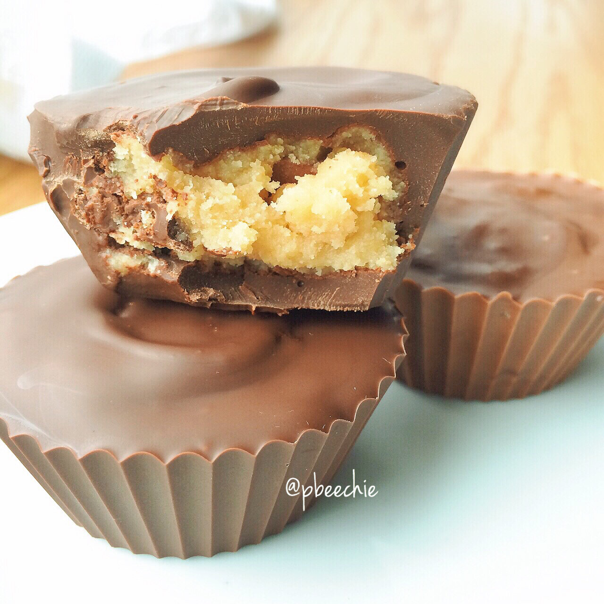

Chocolate Chip Cookie Dough Cups

OH, well, hey there ho there! *hardcore sarah plain voice* Chocolate chip cookie dough cups are fan-diddly-tastic doncha knowww?! Especially when it's healthy.
Raw till 4 week experiment update: iiiit's..not for me. I felt awful after 3 days. Exhausted always. My teeth hurt?? I was sick after EVERY meal and basically useless. I never felt totally satiated and just wanted to eat EVERYTHING by the end of the night. I got acne (which I never have an issue with) and I found my orthorexic thinking coming back very very fast. Just too many rules and stupid guidelines that felt restrictive. It's not for me. I can't do that and stay mentally healthy. I got sick of the sweet fruit and just...no. SO yeah. At least I know hahah. I am going to be more conscious of vegan options > non vegan but I'm not going to go to extreme measures to do so. Anyways. Yep. I am convinced that Freelee created Raw Till 4 as a way to stay perpetuate her bingeing habits, but do so in a way that's socially acceptable. I just couldn't eat that much fruit at once. I'd get sick. But then if I eat smaller meals, I'm hungry just 2 hours later, which isn't realistic. By night time I didn't want to workout, I just wanted to eat cooked food and sleep. No bueno.
Chocolate Chip Cookie Dough Cups
Makes: 4 cups
-
1/3 cup oat flour (old fashioned rolled oats ground up)
-
2 TBSP coconut flour
-
2 TBSP unsweetened applesauce
-
2 TBSP sugar free breakfast syrup
-
1/4 cup water
-
25-30 vanilla stevia drops
-
1/2 tsp imitation butter extract
-
6 oz sugar free chocolate baking chips
In a small bowl, mix all of your ingredients except for the chocolate. This is your cookie dough!!!
Then microwave the chocolate for 1:30-2:00 minutes until melted. Use 1/2 of the melted chocolate to fill 4 silicon cupcake molds 1/3 of the way. Then separate the cookie dough into 4 parts and place one in each cupcake mold. Cover with the remaining chocolate.
Let it cool in the fridge to quickly re-solidify the chocolate. Once solid, store at room temp! Best eaten at room temp melty in your mouthy. Unless you like crisp chocolate with a snap, eat from the fridge.